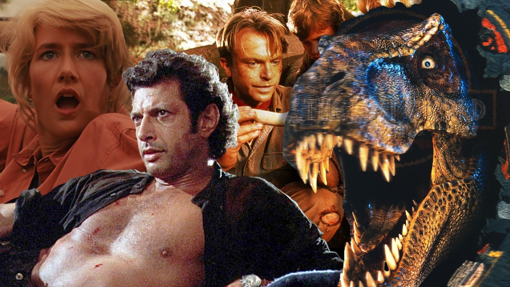

Jurassic Park är en amerikansk film som hade biopremiär i USA den 11 juni 1993, regisserad av Steven Spielberg, baserad på boken Urtidsparken av Michael Crichton. Filmen har fått fem sammanhängande uppföljare.
Företaget InGen har lyckats framställa utdöda dinosaurier av urgammalt DNA. En park, Jurassic Park, ska öppnas på ön Isla Nublar. Innan parken ska öppnas bjuder ägaren John Hammond in dinosaurieexperterna Alan Grant och Ellie Sattler till ön, samtidigt som advokaten Donald Gennaro som representerar parkens investerare bjuder in matematikern och kaosteoretikern Ian Malcolm. Efter ett besök i parkens högkvarter får de åka på en attraktion i en jeep tillsammans med Hammonds barnbarn Tim Murphy och Lex Murphy. På vägen tillbaka till kvarteret bryts strömmen till elstängslen som omger dinosaurierna och det är parkens säkerhetsrådgivare Dennis Nedry som visar sig ligga bakom. Han är nämligen en spion som försöker stjäla dinosauriernas embryon från högkvarteret så han kan sälja dem till ett konkurrerande företag i utbyte mot 1,5 miljon dollar. När strömmen bryts blir personerna på attraktionen attackerade av en Tyrannosaurus rex. Alan och John Hammonds två barnbarn Lex och Tim lyckas undkomma attacken och flyr in i djungeln. Nedry själv når dock aldrig hamnen för att överlämna de stulna embryona då en storm gör att han kör vilse i djungeln på väg till hamnen och blir dödad av en Dilophosaurus när hans bil kör fast. Alan och barnen försöker ta sig tillbaka till högkvarteret, jagade av den hungriga Tyrannosaurus rexen och velociraptorerna.
I världssuccén Jurassic Park spelar ett flertal älskade skådespelare, såsom:
Som tidigare nämnt skapades ett flertal till filmer i filmserien som numera infinner sig i två separata generationer som förenas i den nyaste, och sista, filmen. I filmseriens första generation, Jurassic Park följer vi, främst, Ian Malcolm, Ellie Sattler och Sam Nelli. Senare, i filmseriens andra generation, Jurassic World följer vi istället Claire och Owen som spelas av Bryce Dallas Howard och Chris Pratt.
Följande lista följer filmerna i kronologisk ordning efter premiär